Aprovecha al máximo la exclusividad de Casa Tauro: camina la selva para observar la vida silvestre, nada en la piscina y en la playa, y sal al mar. Para complementar tu estancia trabajamos con los mejores profesionales de la zona.Make the most of Casa Tauro’s exclusivity: walk the jungle to observe wildlife, swim in the pool and at the beach, and head out to sea. To round out your stay, we work with the finest professionals in the area.
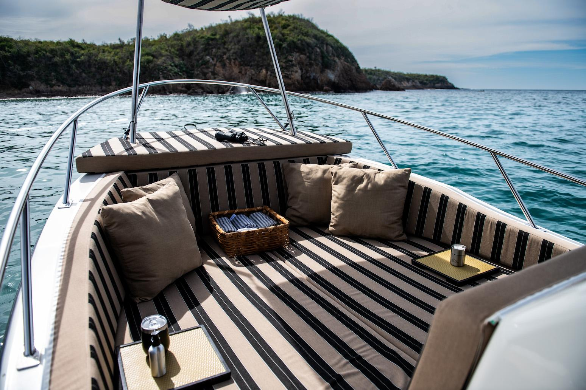
La experiencia insigniaThe signature experience
Un paseo en “Tauro”A ride aboard “Tauro”
El barco es imprescindible para vivir este litoral: aguas turquesas, arena blanca, islotes y la inmensidad del Pacífico vistos desde el mar. Con suerte, verás ballenas; o dedica el día a la pesca y nuestros chefs prepararán tu captura para la cena.The boat is a must to experience this coastline: turquoise water, white sand, islets and the vastness of the Pacific seen from the sea. With luck you will see whales; or spend the day fishing and our chefs will prepare your catch for dinner.
A bordo te esperan cojines a la sombra, protector solar, agua, refrescos y cerveza, y una tripulación atenta.On board: shaded cushions, sunscreen, water, soft drinks and beer, and an attentive crew.
CapacidadCapacityHasta 10 personasUp to 10 guests
HorarioScheduleTodos los días, 8:00 al atardecerDaily, 8:00 to sunset
MínimoMinimum2 horas2 hours
Ideal paraIdeal forBahía, ballenas, pesca y llegada al picnicBay tours, whales, fishing and picnic arrival
Vívelas en las piscinas privadas, en la intimidad de tu habitación o terraza, o con la brisa de la playa.Enjoy them in the private pools, in the privacy of your room or terrace, or with the beach breeze.
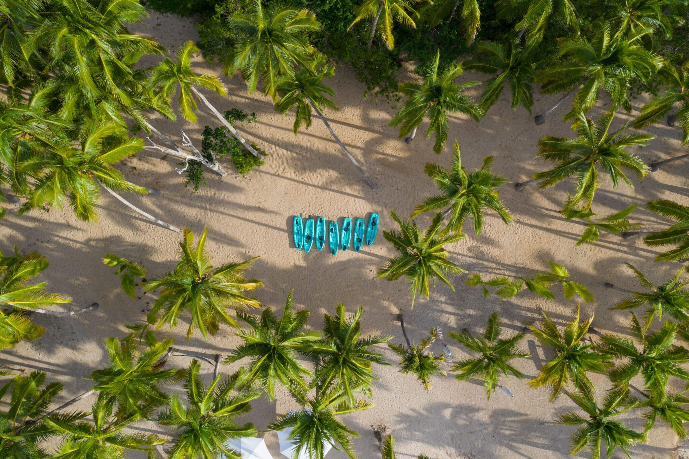
01Kayak, paddle y snorkelKayak, paddle & snorkel
Descubre la bahía de Casa Tauro en kayak o paddle board, o asómate a sus aguas cristalinas con equipo de snorkel. Para toda la familia.Discover Casa Tauro’s bay by kayak or paddle board, or explore its crystal-clear water with snorkel gear. For the whole family.
Equipo disponible en la playaGear available on the beach
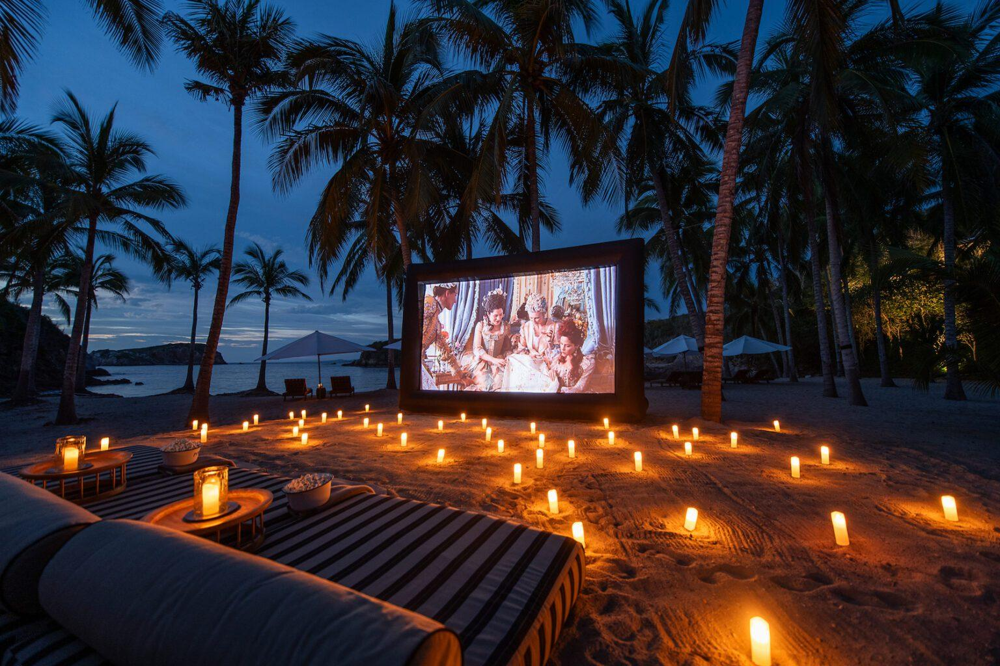
02Cine en la arenaCinema on the sand
Pantalla gigante, camastros, velas y snacks frescos bajo el cielo estrellado, con el sonido del mar de fondo.A giant screen, loungers, candles and fresh snacks under the starry sky, with the sound of the sea in the background.
$2,500 MXN
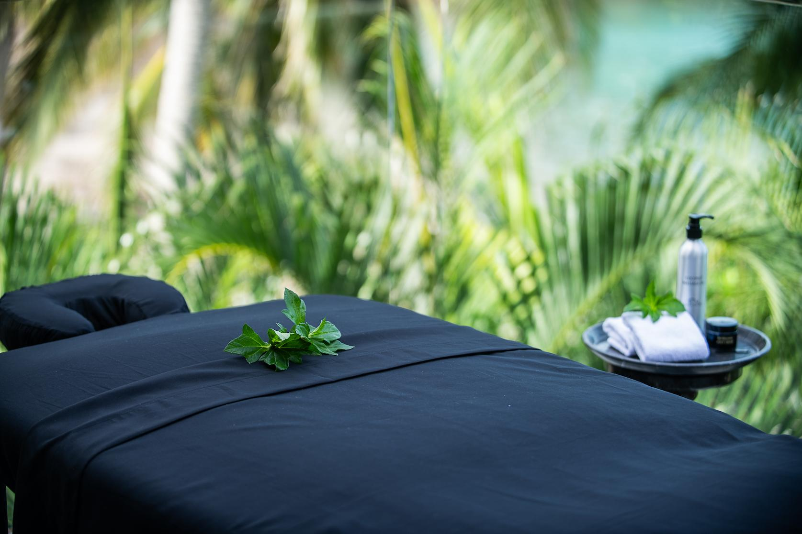
03Masajes y bienestarMassages & wellness
Relajante, descontracturante, holístico, a cuatro manos o reflexología, en tu terraza o junto al mar. También temazcal y sanación con sonido.Relaxing, deep-tissue, holistic, four-hands or reflexology, on your terrace or by the sea. Also temazcal and sound healing.
Desde $2,000 MXNFrom $2,000 MXN
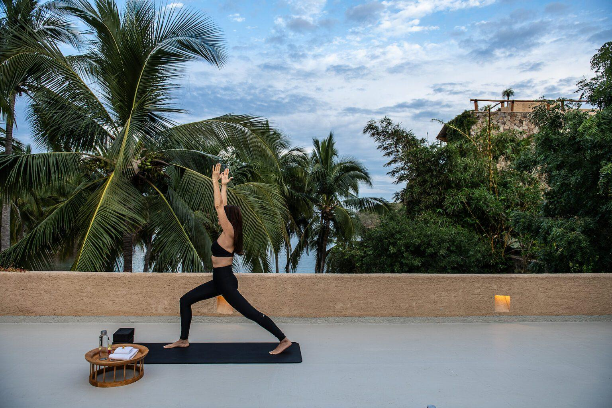
04Yoga y meditaciónYoga & meditation
Sesiones privadas o en grupo de vinyasa con Kim Kessler, maestra certificada por Yoga Alliance con más de 20 años de práctica.Private or group vinyasa sessions with Kim Kessler, a Yoga Alliance–certified teacher with over 20 years of practice.
Fuego, sillas de playa y palmeras para cerrar el día; con música en vivo, mariachi o trío si lo deseas.Fire, beach chairs and palm trees to close the day; with live music, mariachi or a trio if you wish.
$2,500 MXN
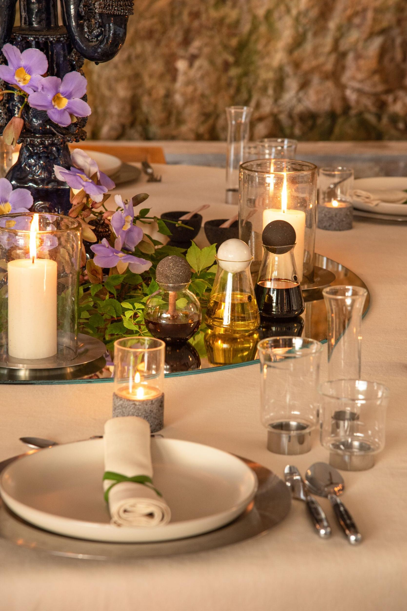
06Degustación de tequilaPremium tequila tasting
Un recorrido guiado por catadores expertos, de las notas ahumadas a las dulces, con selecciones premium.A guided journey with expert tasters, from smoky to sweet notes, with premium selections.
$2,500 MXN p/p$2,500 MXN pp
Picnic en la playaBeach picnicNuestra experiencia gastronómica insignia. Ver menús →Our signature dining experience. See menus →
Música en vivoLive musicMariachi, trío o DJ para tus celebraciones.Mariachi, trio or DJ for your celebrations.
Clases privadas de salsaPrivate salsa lessonsCon Alejandra Lara, en la comodidad de la casa.With Alejandra Lara, in the comfort of the house.
Entrenamiento personalizadoPersonal trainingCalistenia, ligas, carrera, cardiobox o entrenamiento adaptado.Calisthenics, bands, running, cardio boxing or adapted training.
Manicura y pedicuraManicure & pedicureCon esmalte normal o de gel.With regular or gel polish.
Retratos familiaresFamily portraitsSesión de una hora con fotógrafo profesional.One-hour session with a professional photographer.
Fuera de Casa TauroBeyond Casa Tauro
Careyes está a solo 2.7 km: total privacidad en la casa y, a cinco minutos, una comunidad internacional con clubes, playas y restaurantes.Careyes is just 2.7 km away: total privacy at the house and, five minutes away, an international community with clubs, beaches and restaurants.
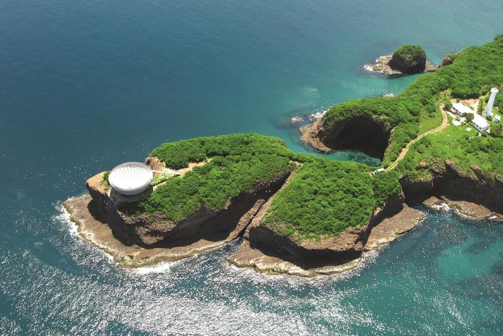
01Copa del SolCopa del Sol
La escultura soñada por Gian Franco Brignone, fundador de Costa Careyes, sobre un acantilado frente a Playa Teopa. A 25 min.The sculpture dreamt by Gian Franco Brignone, founder of Costa Careyes, on a cliff above Playa Teopa. 25 min away.
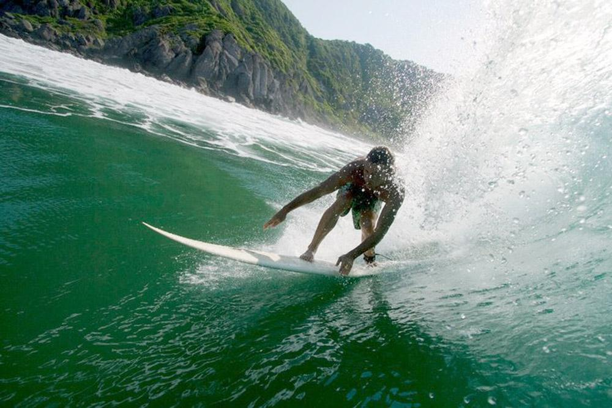
02SurfSurf
Barra de Navidad, a 20 min, tiene olas para todos los niveles, con clases para principiantes. De noviembre a junio.Barra de Navidad, 20 min away, has waves for every level, with lessons for beginners. November to June.
Desde $1,800 MXN · 1.5 hFrom $1,800 MXN · 1.5 h
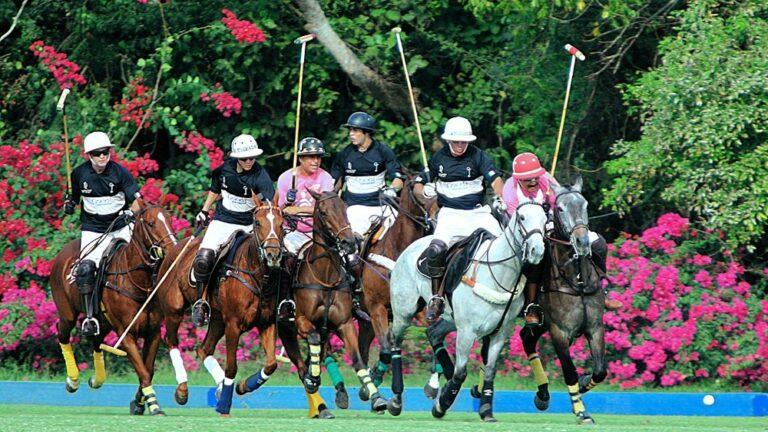
03Polo y paseos a caballoPolo & horseback riding
El exclusivo Careyes Polo Club abre sus puertas; paseos para principiantes, jinetes avanzados y ponis para los niños. A 20 min.The exclusive Careyes Polo Club opens its doors; rides for beginners, advanced riders and ponies for children. 20 min away.
Desde $1,700 MXNFrom $1,700 MXN
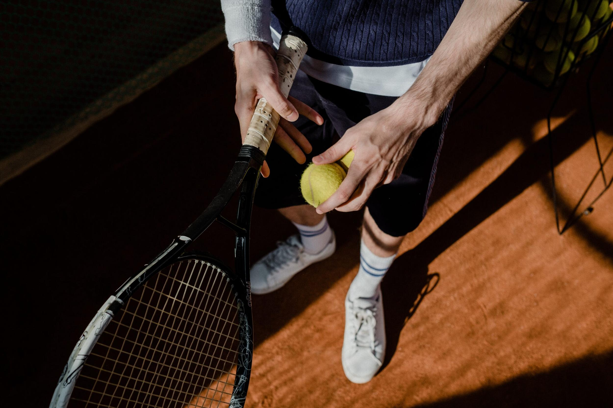
04Tenis y golfTennis & golf
Canchas en El Careyes Club & Residences (15 min) y los 18 hoyos frente al mar del Club de Golf Tamarindo (45 min).Courts at El Careyes Club & Residences (15 min) and the 18 oceanfront holes of Tamarindo Golf Club (45 min).
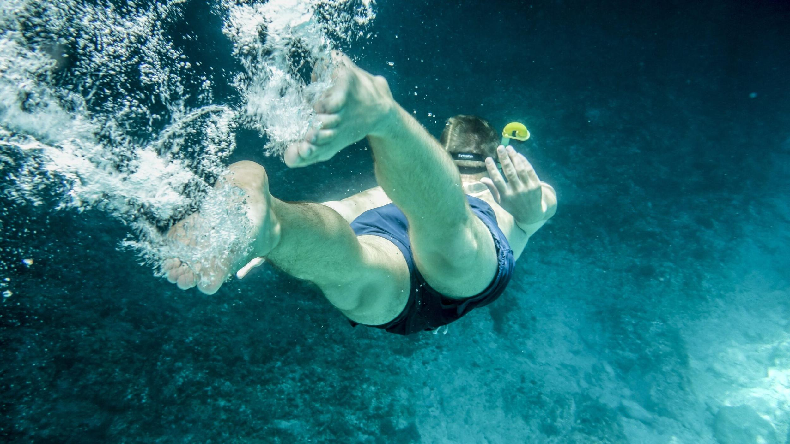
05BuceoScuba diving
Cursos y salidas con Alegre Scuba Republic, centro PADI con más de 15 años, desde la playa o en barco.Courses and dives with Alegre Scuba Republic, a PADI centre with over 15 years, from the beach or by boat.
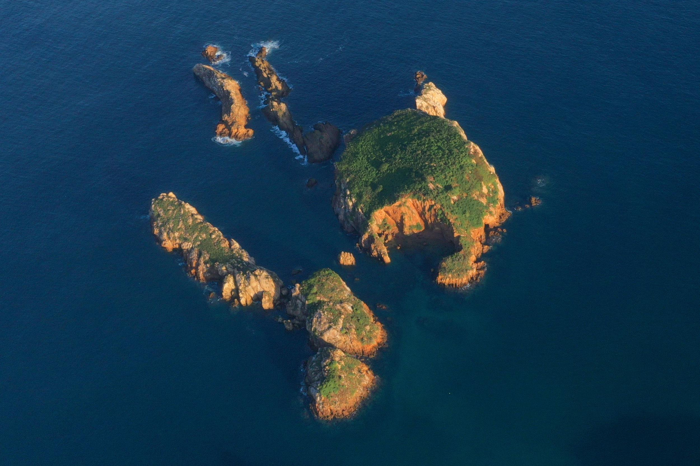
06Compras y restaurantesShopping & restaurants
Artesanía mexicana en Casa Pueblo, Indigo y Templo Artesano; mesas como Playa Rosa, Punto.Como, Casa do Nada o Malabar.Mexican crafts at Casa Pueblo, Indigo and Templo Artesano; tables such as Playa Rosa, Punto.Como, Casa do Nada or Malabar.
Las experiencias con proveedores externos se contratan directamente con ellos, tienen costo adicional y requieren reservación anticipada; con gusto te ayudamos a coordinarlas. Precios en pesos mexicanos, sujetos a cambio. Contamos con traslados en Suburban o Sprinter.Experiences with outside providers are booked directly with them, carry an additional cost and require advance booking; we are happy to help coordinate them. Prices in Mexican pesos, subject to change. Transfers available by Suburban or Sprinter.